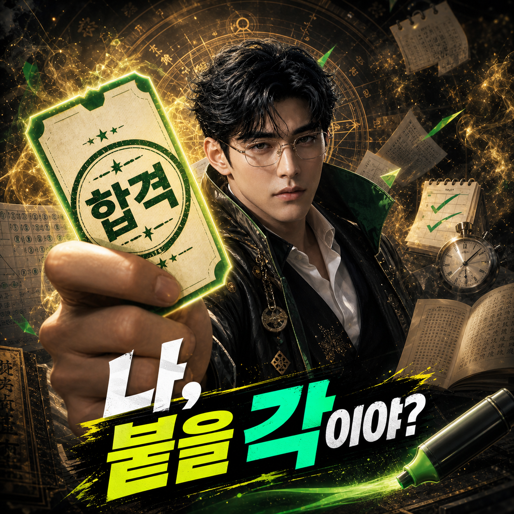
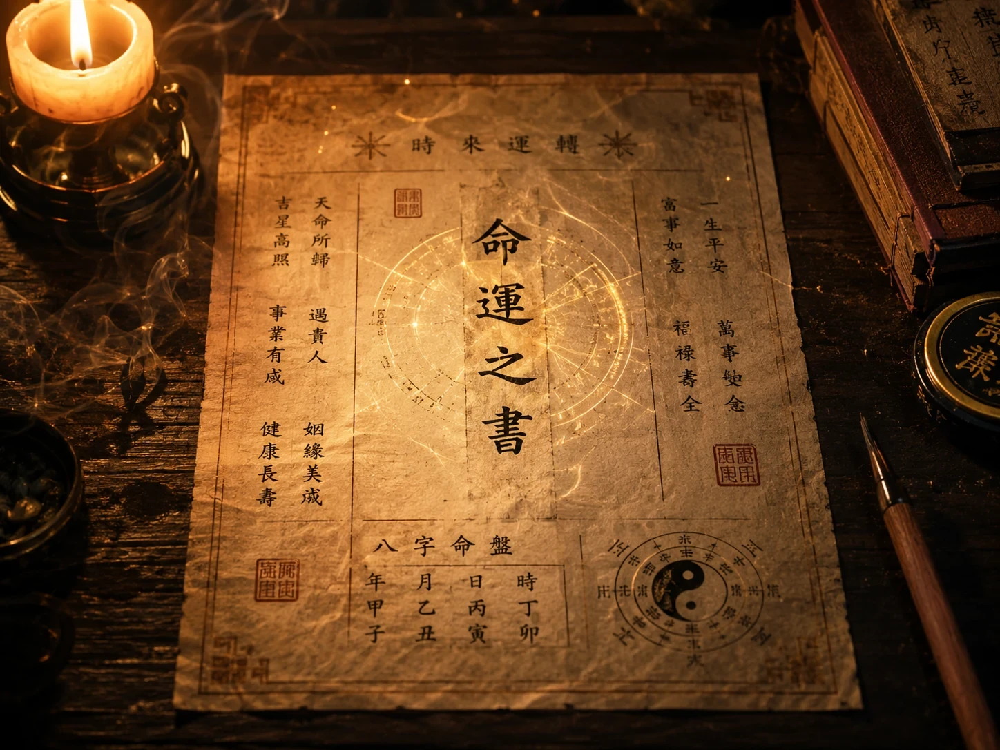
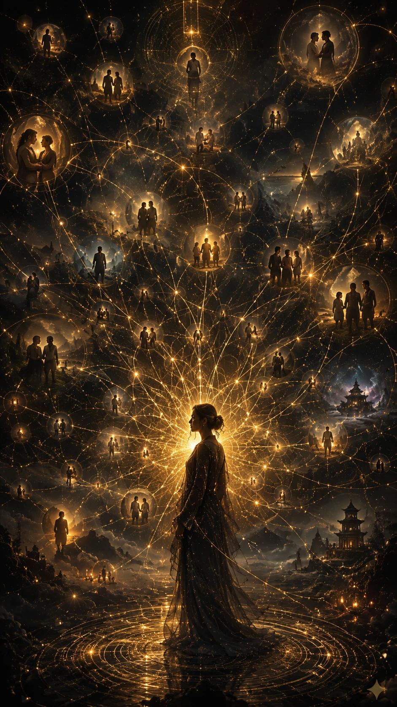

나, 붙을 각이야?
올해 밀어붙일지, 전략을 바꿀지, 다시 잡아야 할지. 시험운과 공부법, 멘탈, 환경, 시험 당일 컨디션까지 한 번에 봅니다.
운만 보는 게 아니라 붙는 방식을 잡습니다
같은 시험이어도 누구는 몰아칠 때 붙고, 누구는 루틴을 쌓을 때 붙습니다. 이 서비스는 지금의 흐름과 내 공부 타입을 같이 읽습니다.
지금은 밀어붙일 구간인지 먼저 가릅니다
붙는 흐름과 잡는 흐름이 동시에 올 때가 있습니다. 그래서 첫 판정은 “된다/안 된다”가 아니라 GO, HOLD, 재정비 중 어디에 가까운지입니다.
한 번에 갈 각인지, 길게 볼 각인지 나눕니다
시험은 무조건 오래 버틴다고 붙는 것도, 무조건 몰아친다고 붙는 것도 아닙니다. 내 흐름이 단기 승부형인지 장기 누적형인지 먼저 잡아야 전략이 흔들리지 않습니다.

내 머리가 잘 먹히는 공부법부터 봅니다
암기, 이해, 혼공, 스터디, 몰아치기, 꾸준 루틴. 나한테 안 맞는 방식으로 버티느라 에너지를 새고 있지 않은지 봅니다.


붙는 타이밍은 밀 때와 버틸 때가 다릅니다
올해 흐름, 유리한 달과 불리한 달, 원서·접수 시기, 재도전 판단 시점을 현실 일정과 함께 확인합니다.

집중을 깨는 패턴까지 같이 잡습니다
비교, SNS, 사람에게 끌려다니는 흐름, 돈·생활 걱정, 자기 의심이 올라오는 때를 미리 알고 대응합니다.

나를 밀어주는 사람과 피해야 할 조언도 봅니다
스터디, 학원, 멘토, 가족 기대가 전부 도움으로 작동하지는 않습니다. 지금 나를 살리는 조언과 에너지를 빼는 조언을 구분합니다.
결제 후엔 합격각 목차가 열립니다
전체 결과는 시험운을 말로만 띄우지 않고, 공부 전략과 시험 당일 루틴까지 바로 실행 가능한 형태로 정리합니다.


지금은 불안해할 때가 아니라 각을 볼 때입니다
결과는 확정 예언이 아니라 선택 기준입니다. 지금 밀지, 루틴을 바꿀지, 재도전을 볼지 판단할 수 있게 정리합니다.